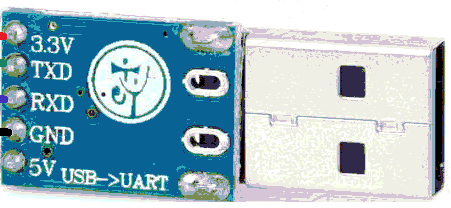
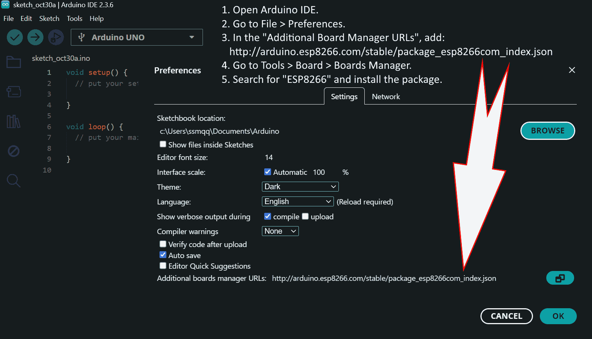
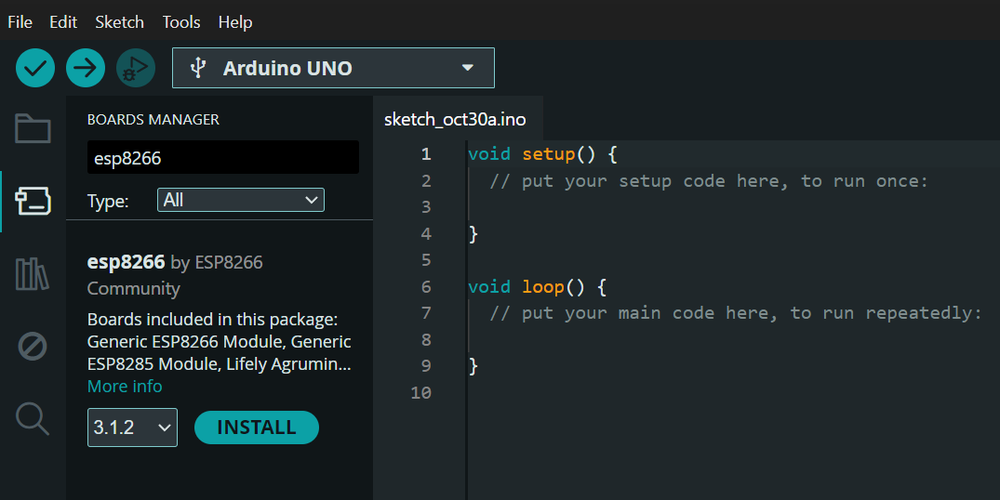
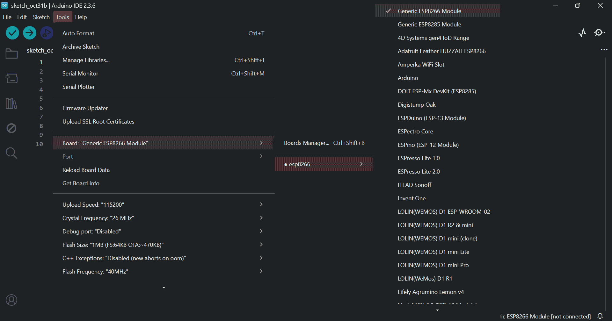
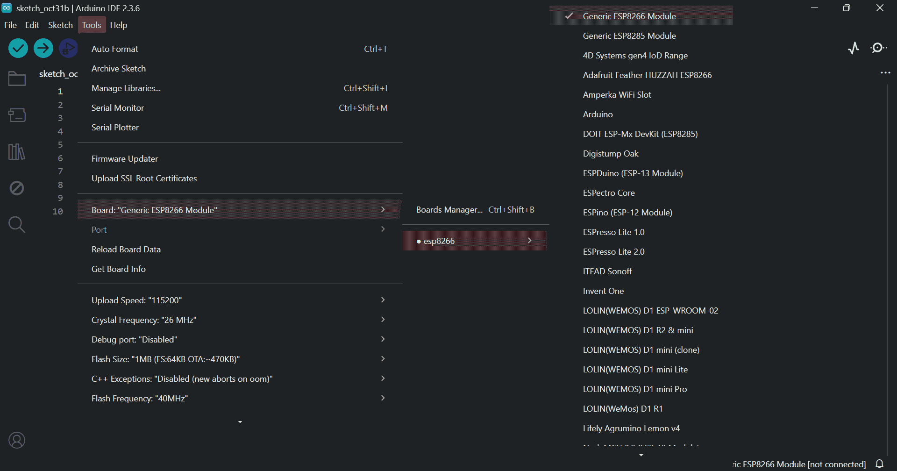
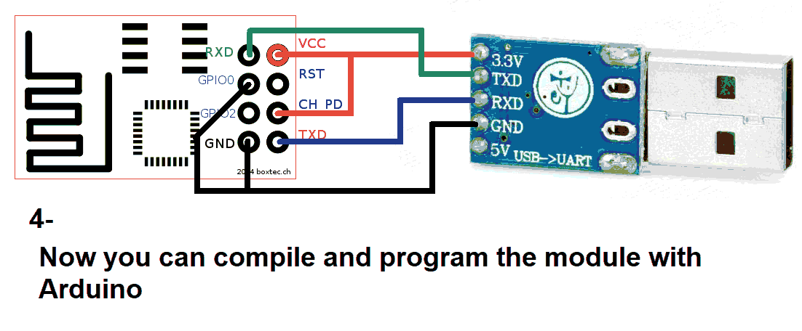
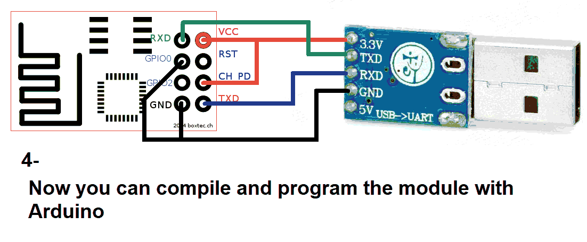
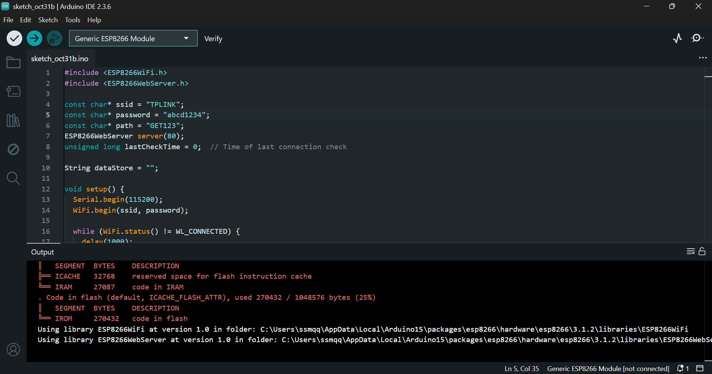
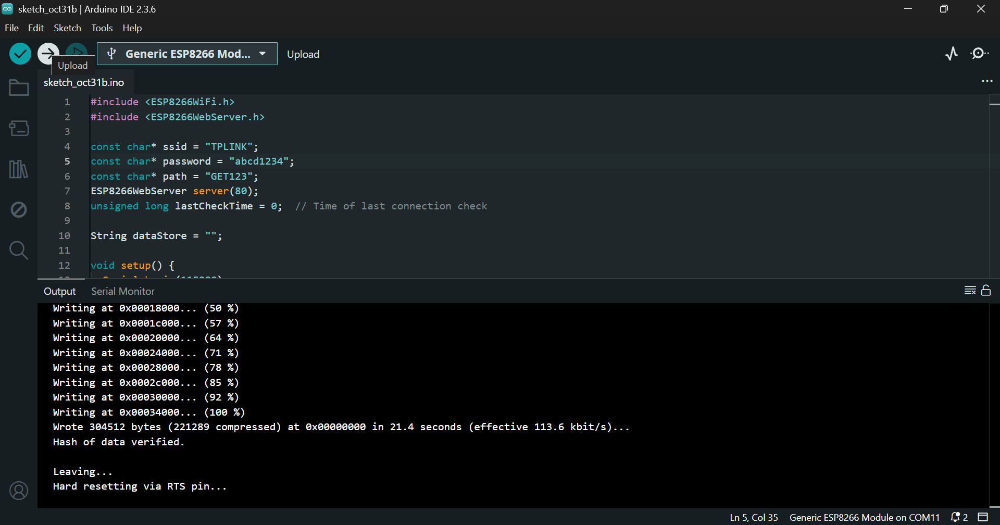
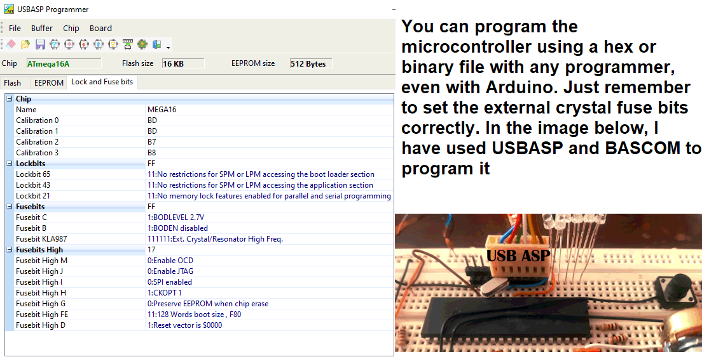

This tutorial helps you set up the ESP8266 Wi-Fi module and connect it to SoifGo.
Use a USB to TTL converter. It can be a single USB-to-TTL board or a combination of USB-to-UART and UART-to-TTL.
You’ll need both 5V and 3.3V power sources. Recommended converter:
Install the required libraries and check the port and board settings:
  

Download the program file:
📦 Download esp8266.zipPaste the code into Arduino IDE. You can configure Wi-Fi settings before upload:
wifiName = "TPLINK";
wifiPass = "abcd1234";
portLastByte = 104;
userPath = "report";
Or send commands via serial after upload:
#wifi=TPLINK*
#pass=abcd1234*
#port=104*
#user=report*


 

Click Verify and then Upload in Arduino:
 


Restart the module. You should see output like:

Program your ATmega16 using a compatible programmer:
📦 Download HEX File 📦 Download BASCOM Setup Visit:
http://192.168.1.104/report
You should see:
{"volt":"3.16","temp1":"3","temp2":"513","portb":"00000000"}